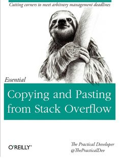

UPDATE (2019-07-07): Check out this {usethis} article for a more automated way of doing a pull request.
I had the wonderful opportunity to participate in the {tidyverse} Developer Day the day after rstudio::conf2019 officially wrapped up. 1 One of the objectives of the event was to encourage open-source contributor newbies (like me :smile:) to gain some experience, namely through submitting pull requests to address issues with {tidyverse} packages.

Having only ever worked with my own packages/repos before, I found this was to be perfect opportunity to “get my feet wet”!
A “Minimal”, Step-by-Step Breakdown of the Process
To the reader who is interested in nothing else other than the “minimum” set of “required” steps of making a pull request 2, I’ve outlined the steps that I took below (with additional commentary provided afterwards and/or with footnotes). I use double brackets {{/}} to indicate names/variables that should be filled in by you for your particular use case. More specifically,
{{repo}}refers to the GitHub repository (duh :stuck_out_tongue:);{{user}}refers to your GitHub username;{{owner}}refers to the owner of the GitHub repo;{{branch-name}}refers to the name that you give your branch for your pull request (double duh :stuck_out_tongue: :stuck_out_tongue:); 3 4 and{{message}}refers to the commit message that you make with your pull request changes (duh x3 :stuck_out_tongue: :stuck_out_tongue: :stuck_out_tongue:).
Fork the repo on GitHub.
At https://github.com/{{owner}}/{{repo}}.git (i.e. the repo’s GitHub page), select the “Fork” button. Wait for GitHub to generate the fork and for your browser to navigate you to https://github.com/{{user}}/{{repo}}.git (i.e. your copy of the repo on GitHub). 5
Prepare your local environment to make the pull request.
Using the Git Bash terminal,
Make the changes (locally) for the pull request.
Review the changes (locally) and push.
Using the Git Bash terminal,
git statusgit add .git commit -m "{{message}}"git push -u origin {{branch-name}}9
Finalize the pull request on GitHub.
At https://github.com/{{user}}/{{repo}}.git, select the “New pull request” button, then “Create pull request” on the subsequent page, and then “Create pull request” again (on the page that allows you to add comments). 10
Note that if your pull request is not accepted upon the first commit, then you’ll need to repeat steps 3 and 4. And, instead of repeating step 5, you should make a comment on the existing pull request on GitHub. (Assuming that the pull request reviewer left you some comments, then you should just reply to theirs.)
Additional Notes
There are a couple of extra/alternative things you should consider doing in this process (although these are completely optional).
- After
cd’ing into the repo, a good “sanity check” to perform is agit remote -vto verify that you are on(master)branch of the forked repo. You should see the following when running this command.
origin https://github.com/{{user}}/{{repo}}.git (fetch)
origin https://github.com/{{user}}/{{repo}}.git (push)Then, you could run this command again after the git remote add upstream https://github.com/{{owner}}/{{repo}}.git command and verify that you see the following.
origin https://github.com/{{user}}/{{repo}}.git (fetch)
origin https://github.com/{{user}}/{{repo}}.git (push)
upstream https://github.com/{{owner}}/{{repo}}.git (fetch)
upstream https://github.com/{{owner}}/{{repo}}.git (push)- Regarding the
git pull upstream --ff-onlystep, it’s actually “safer” to break this step up into two: (1)git fetch upstream, followed by
git merge upstream/master. Nonetheless, (I believe that) thegit pullcommand shown here should achieve the same result.
Following the
git pull upstream --ff-onlystep, you might also want to do agit pushto really ensure that your master branch is “in sync” with the original repo. Nonetheless, this is completely optional, especially if you’re working exclusively on a branch. This is discussed by Jenny Bryan in the “Get upstream changes for a fork” chapter in her [Happy Git and GitHub for the useR book] (https://happygitwithr.com) (which, I should note, I used as a guide throughout this process).In the last “Create pull request” page, where you have the option to write a comment, it’s useful to write something like “Fixes #{{#}}”, where
{{#}}is the number of the issue. GitHub has a nice feature that can link the pull request to the issue that it attempts to fix (assuming that the pull request is directed towards a specific issue).
My Experience
The RStudio staff sort of gave us a head-start by tagging some issues beforehand. (Many of these were supposed to be relatively straightforward to resolve.) Trying to avoid something too difficult and not wanting to be stuck in “indecision purgatory”, I quickly jumped on one that seemed simple enough—{dplyr}’s issue 4071: "Add examples for cumall(). Note that I say that it “seemed simple enough”; in reality, it would go on to take a little bit more effort than I had originally imagined it would (which seems to be true of anything in software development :grimacing:).
First, it took me a minute or so to find out where I would need to add the documentation examples. Normally, assuming one is following the “typical” {devtools}/{Roxygen2} workflow for package documentation, one would add comments in the same file as the functions that are being documented. In this case, however, the documentation for cumall() (and also that for the the cumany() and cummean() functions, which were also without examples), is generated programmatically in {dplyr}’s RcppExports.R file from a cpp (i.e. C++) file—window.cpp.
Next was the actual “heart” of the process—creating the example(s). As a strong advocate of the “copy-and-paste-from-StackOverflow” workflow :smile: (as well as the “changing-things-and-seeing-what-works” workflow), I searched some of the existing examples and found that the “ranking” documentation group (in rank.R) provided a good starting point. I didn’t take too long to come up with some basic examples. (See the first commit on my pull request, or, for all of the details, the whole history of the request.) Then, after running a devtools::check() to regenerate the documentation, rebuild the package (and verify that I didn’t “break” anything), etc., I submitted the pull request on GitHub.

I assumed (perhaps naively) that my pull request would be accepted without question. However, that was without considering the fact that it was going to be reviewed by none other than Hadley Wickham himself. Hadley is certainly a meticulous person, so the changes would not get approved without some level of well-intentioned, critical examination. And, as it turns out, the request was not approved immediately.
Hadley identified some points of improvement and submitted some comments, obligating me to address his feedback. Although failure to gain immediate acceptance for the pull request might be discouraging, this was certainly not the case for me (and I hope that it is not for anyone else, especially first-timers). My mindset was to treat the feedback as an opportunity for improvement, which I’m always up for. Moreover, Hadley’s supportive statements and tone provided additional motivation for me to continue working toward something better. So, even though I’m mostly writing from my own point of view as a first-time pull request submitter, there is a lesson to be learned here for those receiving and reviewing pull requests from other—be supportive! 11
After submitting some updates in a second commit to my branch, I received another round of feedback from Hadley. Again, his tone was supportive, so I was more than happy to address his comments in a third commit shortly afterwards.
As it stands today–a day after I made the initial fork and pull request—my pull request has an “Open” status. Nonetheless, I’m optimistic that it will eventually be merged (perhaps with another round or two of feedback and commits).
Parting Thoughts
To sum up my whole {tidyverse} Developer Day experience, I’m really glad to have gone through the pull request process in a setting with a bunch of experienced people who were ready and willing to help, as well as others who were just as new to the whole thing as me! It really made everything less intimidating. And now, after having gained the experience, I won’t hesitate to continue contributing to open-source projects going forward.
Also, I’m really happy for the other first-time pull request submitters who were successful in their efforts!
Yay! My first PR to #tidyverse ggplot2 was merged 🤓🎉🎊. Happy #TidyverseDevDay !https://t.co/HDBqHMAsD9
— Amy Yang (@ayanalytics) January 19, 2019
Wohoo! My first #dplyr PR has been merged!! 😁 #TidyverseDevDay pic.twitter.com/A5emJIRmKd
— Nic Crane 🏳️🌈🤓 (@nic_crane) January 19, 2019
Got my first PR submitted and merged to the forcats package. Also will always always always remember to create different branches while working on multiple issues for the same package. #TidyverseDevDay #rstats
— Zhi Yang, PhD (@zhiiiyang) January 19, 2019
Additional Resources
Finally, as a “disclaimer” of sorts, I should say that I’m certainly not the first person to write about how to make a pull request (and I’m by no means an expert on the matter). For those looking for good reference material authored by people in the R community, I’d recommend the following resources.
The “Making a pull request” section in the “Git and GitHub” chapter in Hadley Wickham’s R Packages book. 12
The “Get upstream changes for a fork” chapter in Jenny Bryan’s in [Happy Git and GitHub for the useR book] (https://happygitwithr.com).
Check out this public Google photos album to see a ton of awesome pictures taken byJ.D. Long.↩︎
I know I can’t be the only one who loves reading other people’s blogs, but (admittedly) tends to skim through them to find parts that are most relevant to what I’m doing at the time.↩︎
Note that these steps assumes that the project is on GitHub.↩︎
You can technically make your pull request on the master branch of your forked repo (and avoid using branches whatsoever), but it’s not a “best practice”.↩︎
I apologize for the lack of screenshot here. (I didn’t want to obfuscate the text.) If you’re a visual kind of person, then a YouTube video such as this one might be helpful.↩︎
Even though I’ve read through most of this book before, I only found this part of the book after I went through the pull request process, and I wish I had seen it earlier!↩︎
This step is necessary in order to ensure that your fork is truly “in sync” with the original rep, which could certainly be the case if you forked the repo a while ago and there have been updates to the original repo since then.↩︎
The
--ff-onlypart of the command is actually optional here, but is highly recommended by Jenny Bryan↩︎Note that the
-uflag mean “upstream”, but this is NOT the same as theupstreamremote created earlier.uIS necessary here, but naming the remoteupstreamin a previous step was NOT.↩︎There may be some additional steps here if your request is “behind” the master branch of the source repository. Since each kind of case like this is unique, and because I’ve tried to describe the process as succinctly as possible, I don’t discuss this situation.↩︎
This reminds me of one of my favorite blog posts—Yihui Xie’s rant on the over-eagerness of the Stack Overflow community to close “bad” questions.↩︎
Note that
{{branch-name}}can be anything, but something likeissue-{{#}}is a good practice.↩︎